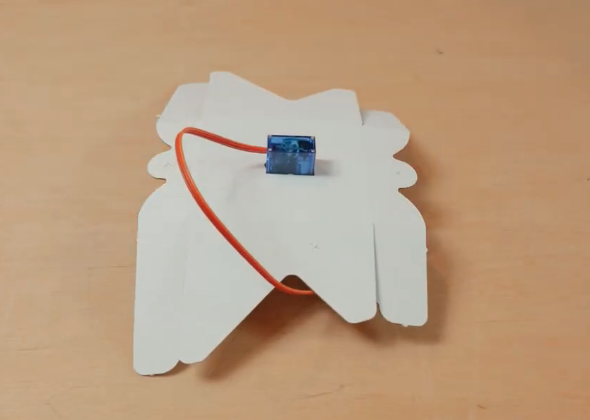
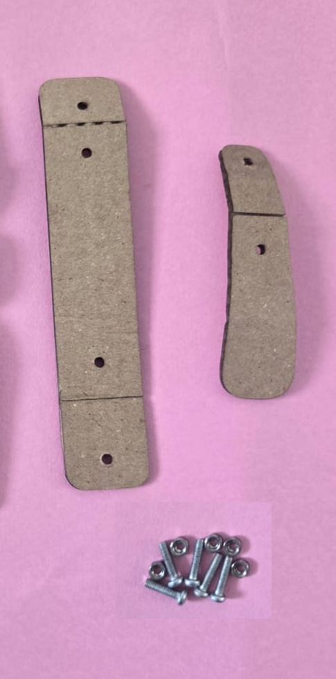
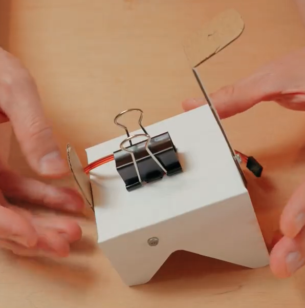

Neck and Tail Assembly¶
In this step, we will attach the neck and tail to the Robot Dog trunk (body) prepared in the previous step. We will also connect both parts to the servo motor cardboard connector so that the servo motor can control the movement of the head and tail.
Follow the pictures and steps carefully. Do not switch ON the servo motor during assembly.
Parts Required¶
| Part | Quantity | Purpose |
|---|---|---|
| Assembled trunk with servo motor horn | 1 | Body assembly completed in the previous step |
| Neck cardboard piece (long one) | 1 | Connects to the head and provides head movement |
| Tail cardboard piece (medium-length one) | 1 | Forms the moving tail |
| Screws | 4 | One for the neck, one for the tail, and two for the body sides |
| Nuts for the four screws | 4 | Hold the four screw connections in place |
| Reused nuts | 2 | Secure the neck and tail connections to the servo cardboard connector |
Total fasteners: 4 screws and 6 nuts (4 regular nuts + 2 reused nuts).
Previously assembled trunk¶

Neck, tail, screws and nuts¶

Step 1: Identify the neck and tail¶
- Take the long cardboard piece. This is the neck.
- Take the medium-length cardboard piece. This is the tail.
- Identify the marked fold lines and the pre-cut holes on both pieces.
- Gently fold along the marked lines as shown in the assembly reference. Do not bend or tear the cardboard at the holes.
Step 2: Attach the neck to the body¶
- Place the neck at the front of the trunk (longer side), where the Robot Dog's head will be attached.
- Align the neck hole with its matching mounting hole in the cardboard body.
- Insert 1 screw through the matching holes.
- Secure it with 1 nut. Tighten enough to hold the neck in place, but make sure its intended movement is not blocked.
Step 3: Attach the tail to the body¶
- Place the tail at the rear of the trunk (shorter side).
- Align its hole with the corresponding mounting hole on the body.
- Insert 1 screw through the matching holes.
- Secure it with 1 nut. Check that the tail is straight and has room to move.
Step 4: Secure both sides of the body¶
- Check that the folded sides of the trunk are aligned.
- Insert 1 screw and 1 nut on the left side of the body.
- Insert 1 screw and 1 nut on the right side of the body.
- Gently tighten both screws to keep the body shape firm.
At this point, you have used 4 screws and 4 nuts in total:
| Connection | Screws | Nuts |
|---|---|---|
| Neck to body | 1 | 1 |
| Tail to body | 1 | 1 |
| Left side of body | 1 | 1 |
| Right side of body | 1 | 1 |
| Total used | 4 | 4 |
Step 5: Connect the neck to the servo cardboard connector¶
- Locate the servo motor cardboard connector installed during the servo horn assembly.
- Align the neck's connection point with the corresponding connector screw or threaded fixing point.
- Reuse the nut which is already in the servo motor cardboard connector and fit the neck onto the connector and secure the connection.
- Check that the neck remains connected while the servo linkage can move freely.
Important: Avoid overtightening a moving connection. The linkage should move without being pinched or bending the cardboard.
Step 6: Connect the tail to the servo cardboard connector¶
- Align the tail's connection point with the matching point on the servo motor cardboard connector.
- Reuse the nut which is already in the servo motor cardboard connector to secure the tail connection.
- Make sure the tail is properly aligned and does not rub against the trunk.
The 2 reused nuts now connect the neck and tail to the servo-operated cardboard linkage. This allows the servo motor to move the linked head/neck and tail mechanism.
Step 7: Check the completed assembly¶
Compare your assembly with the reference picture below.

Check the following before proceeding:
- Long neck piece is attached at the front.
- Medium tail piece is attached at the back.
- The body is secured with one screw and nut on each side.
- One reused nut connects the neck to the servo cardboard connector.
- One reused nut connects the tail to the servo cardboard connector.
- All 4 screws and 6 nuts are accounted for.
- Servo motor wire is free and not trapped between cardboard pieces.
- The neck and tail can move without jamming.
Assembly tip: Keep the servo motor powered OFF while checking the linkage. Do not force the servo shaft by hand. If a connection feels tight, loosen its nut slightly and check the alignment before continuing.
How it works¶
The micro:bit controls the servo motor. The servo moves the attached cardboard connector, which transfers motion to the neck and tail. Once the head is attached, the Robot Dog can move its head and tail as programmed.
Troubleshooting¶
| Problem | What to check |
|---|---|
| Neck or tail does not move freely | Check whether a nut is too tight or a cardboard part is misaligned |
| Linkage comes loose | Check the two reused nuts on the servo cardboard connector |
| Body feels unstable | Check the left and right body screws and nuts |
| Cardboard bends or rubs | Realign the neck, tail and connector before tightening |
| Servo wire is pulled during movement | Re-route the wire through the body with enough slack |
Completed Step¶
Great job! The neck and tail assembly is now complete. Both parts are linked to the servo mechanism.
Assembly Video¶
Next Step¶
After completing the setup, continue with the next step.